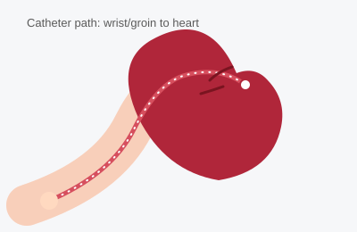

Cardiac Catheterization
Cardiac catheterization ("heart cath") is a procedure that lets your doctor look directly at the arteries supplying your heart. A thin, flexible tube called a catheter is guided through a blood vessel, usually in the wrist or groin, up to the heart. Contrast dye is injected through the catheter so the arteries show up clearly on a live X-ray, revealing any narrowing or blockage.

Duration
30–60 minutes (plus prep and recovery)
Fasting
No food or drink for 6–8 hours before
Sedation
Light ("twilight") sedation, awake
Recovery
Few hours same-day, or overnight if a stent is placed
What Happens During the Procedure
You will lie on an X-ray table and be given a mild sedative through an IV to help you relax — most people stay awake but drowsy throughout. The access site (usually the wrist, sometimes the groin) is numbed with local anesthetic, and a small sheath is placed into the artery. The catheter is then threaded, under X-ray guidance, up to the heart arteries. Contrast dye is injected to outline the arteries on screen, which may cause a brief warm flushing sensation. If a blockage is found, your doctor can often treat it right away with a balloon and stent (called angioplasty) during the same procedure. The catheter and sheath are removed at the end and pressure is applied to the access site to prevent bleeding.
What the Patient Should Know
- No food or drink (except small sips of water with medications) for 6–8 hours beforehand, as directed by the office.
- Arrange for someone to drive you home — you cannot drive yourself due to the sedation.
- Tell the office about all medications, especially blood thinners, metformin, and any kidney problems, since these may need adjustment beforehand.
- You will have bloodwork and an IV placed before the procedure.
- You may feel the catheter moving, but you should not feel sharp pain — tell the team immediately if you do.
- Plan for several hours at the facility total, including prep and recovery time.
Recovery
After the procedure, you will rest while the access site is monitored for bleeding; wrist access generally allows for a shorter recovery (a couple of hours) than groin access (several hours of lying flat). Many diagnostic-only catheterizations are done as same-day (outpatient) procedures, while an overnight stay is common if a stent was placed or if there were any complications. You will be given specific instructions about keeping the access site clean and dry, avoiding heavy lifting or strenuous activity for a few days, and when you can resume driving, work, and exercise — this varies depending on what was done and should be confirmed with your doctor.
Why It Is Done
- Diagnose the location and severity of blockages in the heart arteries.
- Evaluate chest pain, an abnormal stress test, or a suspected heart attack.
- Treat a blockage with angioplasty and stenting during the same visit.
- Measure pressures inside the heart chambers or evaluate heart valve or muscle problems.
Reliable Sources
- American Heart Association, Cardiac Catheterization
- NHLBI, Heart Tests
This page is for general education only and does not replace advice from your doctor. If you have questions about your own procedure, please contact the office.